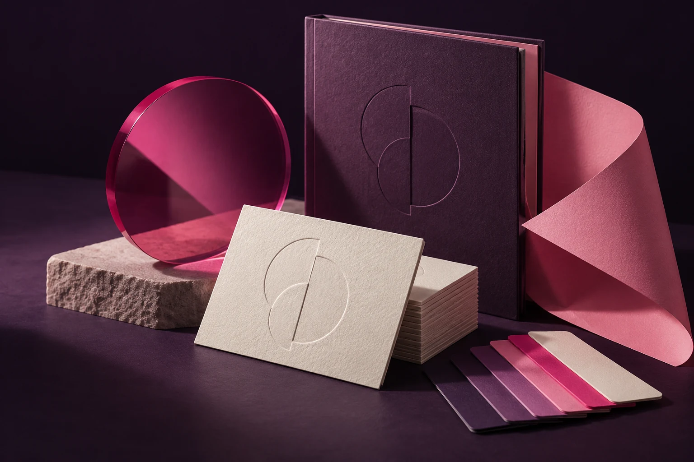

01Brand development
STRATEGY / POSITIONING / STORY
Brand development
& franchising
A brand is more than a logo. It is the idea people remember when they think of you. We define the strategy, positioning and story that give a brand a clear foundation for long-term growth and franchising.
- Brand strategy
- Brand positioning
- Brand storytelling
